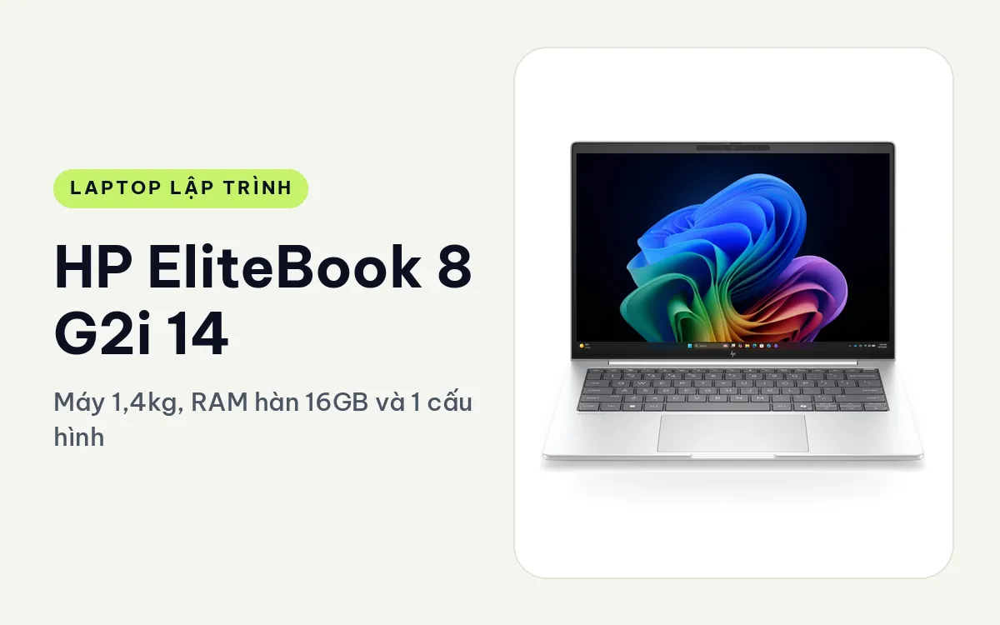
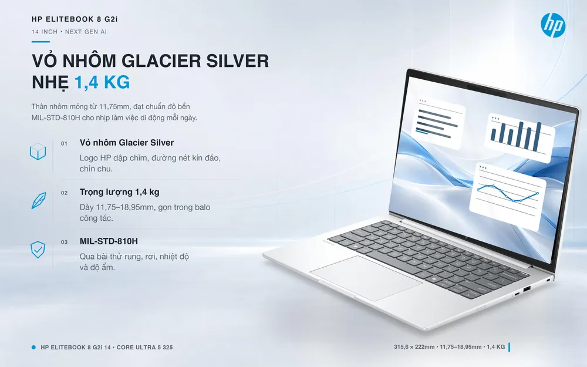
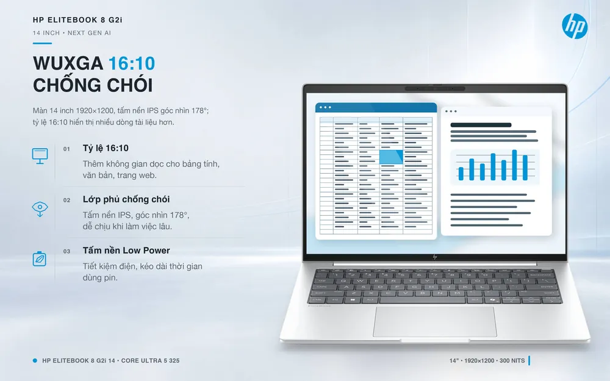
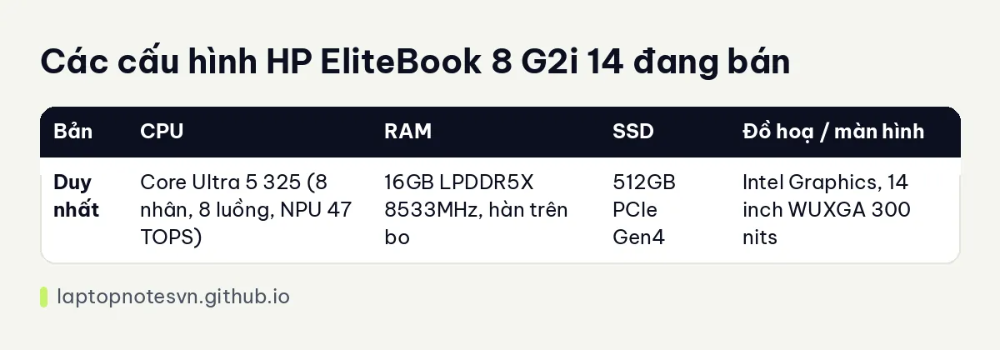

HP EliteBook 8 G2i 14 cho lập trình - Máy 1,4kg, RAM hàn 16GB và 1 cấu hình

Máy của công ty thường bị xem là chỉ để soạn Word và họp Teams, nhưng HP EliteBook 8 G2i 14 Next Gen AI (2026) có phần cứng đủ cho một dev làm web hoặc backend ở mức nhẹ đến vừa. Điểm mạnh của nó là mỏng, nhẹ, bền và bảo mật tốt. Điểm yếu là RAM hàn cố định.
Cửa hàng bán 1 cấu hình: Core Ultra 5 325, 16GB, 512GB. Bài này nói thẳng nó làm được gì, không làm được gì, và ai nên cân nhắc.
Thiết kế dành cho phòng họp
Vỏ nhôm màu Glacier Silver, cạnh bo nhẹ, logo HP dập chìm giữa nắp. Máy rộng 315,6mm, sâu 222mm, dày 11,75mm ở mép trước và tối đa 18,95mm ở phần dày nhất. Kiểu dáng kín đáo, nhìn vào chỉ thấy một chiếc laptop văn phòng gọn gàng, hợp khi bạn cần đi gặp khách hàng chứ không muốn cầm một cục gạch máy trạm.

Máy đạt chuẩn MIL-STD-810H. Bàn phím HP Premium có đèn nền, chống tràn, lớp phủ Durakey giúp phím ít bóng theo thời gian. Webcam 5MP HDR có tính năng nhận diện sự hiện diện, kèm màn chắn camera vật lý và khe khoá Nano Security.
Màn hình 14 inch WUXGA (1920 x 1200), 16:10, IPS chống chói, 300 nits, 62,5% sRGB, 60Hz. Tỷ lệ 16:10 cho thêm vài dòng code theo chiều dọc, rất đáng giá. Tuy vậy 300 nits chỉ vừa cho trong nhà, ngồi ngoài trời hoặc cạnh cửa sổ nắng thì bạn sẽ thấy khó đọc.
Cổng kết nối gồm 2 Thunderbolt 4, 1 USB-C 10Gbps, 1 USB-A 5Gbps, HDMI 2.1 và jack 3,5mm. Sạc được ở cả hai bên thân. Không có cổng LAN và khe thẻ nhớ, nên nếu bạn cần mạng dây khi làm việc ở bàn, một dock USB-C là đủ bù.
Xách đi cả ngày
Trọng lượng khởi điểm khoảng 1,4kg, mỏng dưới 19mm, đây là loại máy bỏ balo mà không nhớ tới. Pin 62Wh đi kèm adapter USB-C 65W, đủ cho một ngày văn phòng ở độ sáng vừa. Trang sản phẩm không đưa số giờ pin cụ thể cho việc code, nên mình chỉ nói được là dùng IDE nhẹ và trình duyệt thì ổn, còn build nặng liên tục sẽ hao pin nhanh hơn.

Muốn sạc nhanh 50% trong 30 phút, theo HP cần adapter từ 100W, tức là phải mua thêm. Máy cũng chạy Windows 11 Pro, tiện cho ai cần WSL2 hoặc Hyper-V.
Có 1 cấu hình duy nhất
| Bản | CPU | RAM | SSD | Đồ hoạ / màn hình |
|---|---|---|---|---|
| Duy nhất | Core Ultra 5 325 (8 nhân, 8 luồng, NPU 47 TOPS) | 16GB LPDDR5X 8533MHz, hàn trên bo | 512GB PCIe Gen4 | Intel Graphics, 14 inch WUXGA 300 nits |
Bản Core Ultra 5 325, 16GB, 512GB
Với RAM LPDDR5X hàn chết, điều đầu tiên bạn cần hiểu là 16GB là con số cuối cùng của máy này. Bạn không nâng lên được sau khi mua. Trang sản phẩm có nhắc rằng nếu hay chạy máy ảo thì nên chọn bản 32GB, nhưng cửa hàng hiện không bán bản đó, nên bạn phải tính xem 16GB có đủ cho mình không.

Với dev web frontend, Node.js, Python, PHP, Go hoặc backend nhỏ, 16GB đủ cho một IDE, trình duyệt nhiều tab, một database cục bộ và vài container nhẹ. Bạn cũng học và làm SQL, viết script, quản lý Git trơn tru. CPU 8 nhân với 4 nhân hiệu năng chạy nhanh với compile cỡ vừa, nhưng không có luồng ảo nên build dự án lớn sẽ chậm hơn các chip HX.
Có vài việc bạn nên tránh. Android Studio kèm emulator và Docker chạy nhiều service cùng lúc sẽ nhanh chóng chạm trần 16GB. Huấn luyện mô hình không phải việc của máy này vì chỉ có đồ hoạ Intel tích hợp, không có CUDA. Game nhẹ như Valorant hay CS2 ở thiết lập thấp vẫn chơi được, nhưng đó là phần thưởng chứ không phải mục tiêu.
SSD chỉ có một khe M.2 2280 và đã gắn ổ 512GB. Khi đầy bạn phải thay ổ lớn hơn hoặc dùng ổ di động qua Thunderbolt 4. Nếu bạn lưu nhiều image Docker, hãy tính chuyện này sớm.
Tóm lại
EliteBook 8 G2i 14 hợp với người viết code trong công ty, cần máy nhẹ, bền, bảo mật và hay đi họp: dev web, tester tự động, người làm script hạ tầng, kỹ sư dữ liệu mức phân tích bằng notebook. Nó không hợp nếu bạn dựa vào máy ảo nặng, Android emulator hay AI cục bộ. Muốn máy rẻ hơn một chút và có màn cảm ứng, xem bài HP ProBook 4 G2i 14. Muốn biết 16GB đủ ở mức nào cho từng loại việc, đọc bài về dung lượng RAM cho lập trình viên.
Chi tiết hàng và bảo hành có ở trang HP EliteBook 8 G2i 14 Next Gen AI.
Đăng ngày 08/11/2026